11人の福島の子どもたちを迎え2018コヨットin埼玉を開催
埼玉県生活協同組合連合会
8月7日(火)～9日(火)までの3日間、埼玉県生協連と埼玉県ユニセフ協会の共催、ボーイスカウト埼玉県連盟の協力で、2018コヨットin埼玉を吉見町にあるフレンドシップハイツよしみを拠点に開催しました。この取り組みは、福島の「子どもの心と成長」と特に「お母さんのケア」を大切にしながら保護者の気持ちに寄り添い、子どもと保護者の心身両面からの保養を目的として開催しているもので、福島県生協連を通じて募集をおこない、小学4年生～6年生11人が参加しました。生協スタッフのべ10人、ボーイスカウト埼玉県連盟3人がスタッフとしてかかわり、運営しました。その他、東松山市で活動されている松山婦人会・伝統工芸館・コープみらい西北ブロック委員会のみなさんにうどんづくり体験の際、多大なるご協力をいただきました。
1日目 8月7日(火)
福島駅及び郡山駅から、11人の子どもたちは迎えのスタッフ3人とともに、埼玉県に向けて出発し、順調に宿泊先である吉見町のフレンドシップハイツよしみに到着しました。その後昼食をとり、13時30分から、各生協からの歓迎行事を開催しました。会員生協(コープみらい・生活クラブ生協・医療生協さいたま)からの歓迎のことばや、組合員のみなさんからのメッセージなどの紹介をおこないました。
| 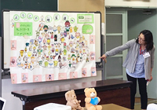 | 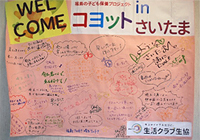 |
左からコープみらいからの紹介、医療生協さいたまから歓迎のことば、生活クラブ生協からのメッセージ
14時30分から、埼玉県ユニセフ協会による「貿易ゲーム」を子ども3チーム、おとな2チーム対抗で実施。与えられた資源を、思い思いの方法で活用しながら、財産を増やしていきました。
| 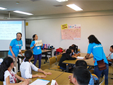 | 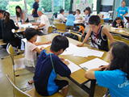 | 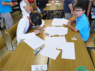 |
16時からはボーイスカウト埼玉県連盟による遊びの時間で、風船やボール・空き缶を使って体を動かしながら、おとなと子ども混合で4チームに分かれ、力を合わせて競いあいました。夕食後は、体育館で100ならべ、ボーイスカウトかるたなどを楽しみました。
| 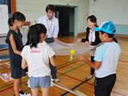 | 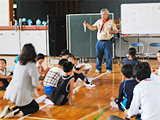 | 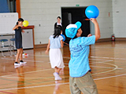 |
2日目 8月8日(水)
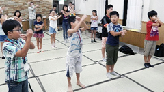 6時45分よりラジオ体操を実施。健康チェック・朝食後に、東松山市民活動センターにバスで移動。
小川町伝統工芸館の亀井さん、高柳さんを講師に、うどんづくり体験がスタート。コープみらい西北ブロック委員会の4人のみなさんにもサポートいただき、子どもたちは３グループにわかれて、小麦粉と塩をまぜるところから、水を加えてこねるところも交代に体験しました。さらさらの粉が塩と水を加えただけで、つやつやの生地に変化する様子も目の当たりにしました。
| 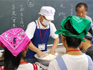 | 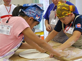 | 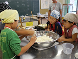 |
次に、亀井さんが前日から寝かせておいてくださった生地を延ばして切る工程も体験しました。おそるおそる包丁を使う子も、徐々に慣れてきれいに均等に切るなど、みんな目を輝かせながら挑戦していました。松山婦人会のみなさんが揚げてくださったにんじんのてんぷらや玉ねぎのかきあげと一緒に、おいしくゆであがったうどんをみんなで試食しました。
| 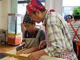 | 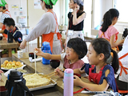 | 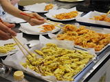 |
昼食後、吉見町埋蔵文化財センターに移動。小雨の中、吉見百穴や戦時中の工場跡、ヒカリゴケを見学し、ふたつめのものづくり体験「勾玉作り」を行いました。
好きな色の石を選んで、やすりで勾玉をイメージして削り、好きな色のひもやビーズを選び、思い思いのペンダントを作りました。
| 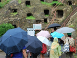 | 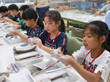 | 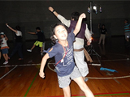 |
体験後、フレンドシップハイツよしみに戻り、夜の光のキャンプファイヤーに向けた歌の練習やブンブンゴマづくりなどをおこないました。夕食後の光のキャンプファイヤーは照明を消した体育館で、ボーイスカウト埼玉県連盟の木村さんを中心に、泉田さんのリードで歌や踊りをおこない、少し疲れたけど楽しい1時間を過ごしました。
3日目 8月9日(木）
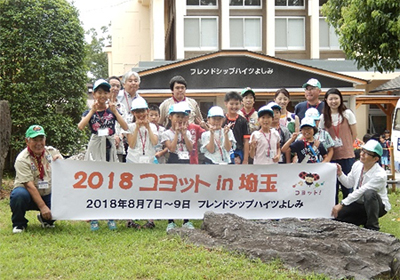
最終日は、台風通過の関係で、むさしの村での野菜収穫体験を鉄道博物館見学に変更。フレンドシップハイツよしみから、さいたま市の鉄道博物館に向かいました。
運転士体験を交代でした後、いくつかのグループにわかれて、館内を見学。お昼は新幹線ラウンジで新幹線弁当をとった後、思い思いに鉄道グッズの買い物や館内の見学をして、最後の自由時間を過ごしました。
記念撮影後、13時30分過ぎ11人の子どもたちは、郡山駅・福島駅に向けて元気に出発しました。
| 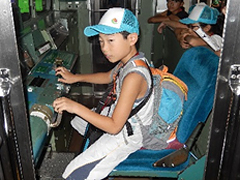 | 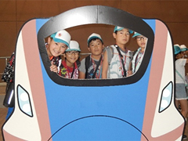 |
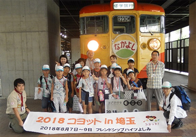
| 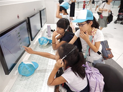 | 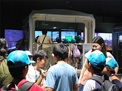 |